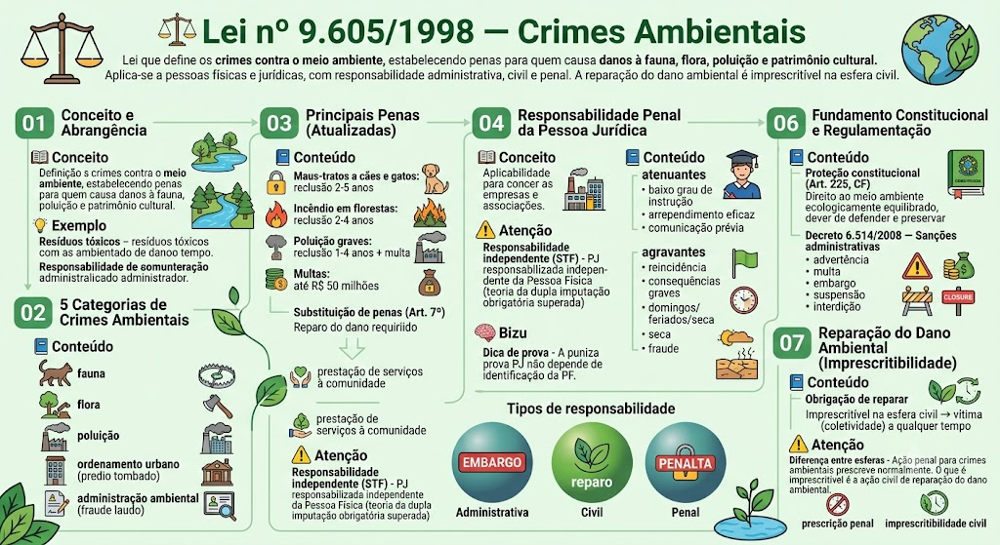

Crimes Ambientais — Lei 9.605/1998
BR / 2026-10-13 / compilada (texto vigente)
Consultar fonte oficial Baixar cópia local
A redação desta cópia corresponde à versão identificada acima. Consulte a fonte oficial para conferir alterações posteriores e o recorte do seu edital.
Roteiro de leitura
- Responsabilidade e penas
- Crimes em espécie
- Infrações e disposições processuais
Índice dos 87 dispositivos
Lei nº 9.605 de 12/02/1998
LEI Nº 9.605, DE 12 DE FEVEREIRO DE 1998
Dispõe sobre as sanções penais e administrativas derivadas de condutas e atividades lesivas ao meio ambiente, e dá outras providências.
O PRESIDENTE DA REPÚBLICA
Faço saber que o Congresso Nacional decreta e eu sanciono a seguinte Lei:
CAPÍTULO I — DISPOSIÇÕES GERAIS
Art. 1º (VETADO)
Art. 2º Quem, de qualquer forma, concorre para a prática dos crimes previstos nesta Lei, incide nas penas a estes cominadas, na medida da sua culpabilidade, bem como o diretor, o administrador, o membro de conselho e de órgão técnico, o auditor, o gerente, o preposto ou mandatário de pessoa jurídica, que, sabendo da conduta criminosa de outrem, deixar de impedir a sua prática, quando podia agir para evitá-la.
Art. 3º As pessoas jurídicas serão responsabilizadas administrativa, civil e penalmente conforme o disposto nesta Lei, nos casos em que a infração seja cometida por decisão de seu representante legal ou contratual, ou de seu órgão colegiado, no interesse ou benefício da sua entidade.
Parágrafo único. A responsabilidade das pessoas jurídicas não exclui a das pessoas físicas, autoras, co-autoras ou partícipes do mesmo fato.
Art. 4º Poderá ser desconsiderada a pessoa jurídica sempre que sua personalidade for obstáculo ao ressarcimento de prejuízos causados à qualidade do meio ambiente.
Art. 5º (VETADO)
CAPÍTULO II — DA APLICAÇÃO DA PENA
Art. 6º Para imposição e gradação da penalidade, a autoridade competente observará:
I - a gravidade do fato, tendo em vista os motivos da infração e suas conseqüências para a saúde pública e para o meio ambiente;
II - os antecedentes do infrator quanto ao cumprimento da legislação de interesse ambiental;
III - a situação econômica do infrator, no caso de multa.
Art. 7º As penas restritivas de direitos são autônomas e substituem as privativas de liberdade quando:
I - tratar-se de crime culposo ou for aplicada a pena privativa de liberdade inferior a quatro anos;
II - a culpabilidade, os antecedentes, a conduta social e a personalidade do condenado, bem como os motivos e as circunstâncias do crime indicarem que a substituição seja suficiente para efeitos de reprovação e prevenção do crime.
Parágrafo único. As penas restritivas de direitos a que se refere este artigo terão a mesma duração da pena privativa de liberdade substituída.
Art. 8º As penas restritivas de direito são:
I - prestação de serviços à comunidade;
II - interdição temporária de direitos;
III - suspensão parcial ou total de atividades;
IV - prestação pecuniária;
V - recolhimento domiciliar.
Art. 9º A prestação de serviços à comunidade consiste na atribuição ao condenado de tarefas gratuitas junto a parques e jardins públicos e unidades de conservação, e, no caso de dano da coisa particular, pública ou tombada, na restauração desta, se possível.
Art. 10. As penas de interdição temporária de direito são a proibição de o condenado contratar com o Poder Público, de receber incentivos fiscais ou quaisquer outros benefícios, bem como de participar de licitações, pelo prazo de cinco anos, no caso de crimes dolosos, e de três anos, no de crimes culposos.
Art. 11. A suspensão de atividades será aplicada quando estas não estiverem obedecendo às prescrições legais.
Art. 12. A prestação pecuniária consiste no pagamento em dinheiro à vítima ou à entidade pública ou privada com fim social, de importância, fixada pelo juiz, não inferior a um salário mínimo nem superior a trezentos e sessenta salários mínimos. O valor pago será deduzido do montante de eventual reparação civil a que for condenado o infrator.
Art. 13. O recolhimento domiciliar baseia-se na autodisciplina e senso de responsabilidade do condenado, que deverá, sem vigilância, trabalhar, freqüentar curso ou exercer atividade autorizada, permanecendo recolhido nos dias e horários de folga em residência ou em qualquer local destinado a sua moradia habitual, conforme estabelecido na sentença condenatória.
Art. 14. São circunstâncias que atenuam a pena:
I - baixo grau de instrução ou escolaridade do agente;
II - arrependimento do infrator, manifestado pela espontânea reparação do dano, ou limitação significativa da degradação ambiental causada;
III - comunicação prévia pelo agente do perigo iminente de degradação ambiental;
IV - colaboração com os agentes encarregados da vigilância e do controle ambiental.
Art. 15. São circunstâncias que agravam a pena, quando não constituem ou qualificam o crime:
I - reincidência nos crimes de natureza ambiental;
II - ter o agente cometido a infração:
a) para obter vantagem pecuniária;
b) coagindo outrem para a execução material da infração;
c) afetando ou expondo a perigo, de maneira grave, a saúde pública ou o meio ambiente;
d) concorrendo para danos à propriedade alheia;
e) atingindo áreas de unidades de conservação ou áreas sujeitas, por ato do Poder Público, a regime especial de uso;
f) atingindo áreas urbanas ou quaisquer assentamentos humanos;
g) em período de defeso à fauna;
h) em domingos ou feriados;
i) à noite;
j) em épocas de seca ou inundações;
l) no interior do espaço territorial especialmente protegido;
m) com o emprego de métodos cruéis para abate ou captura de animais;
n) mediante fraude ou abuso de confiança;
o) mediante abuso do direito de licença, permissão ou autorização ambiental;
p) no interesse de pessoa jurídica mantida, total ou parcialmente, por verbas públicas ou beneficiada por incentivos fiscais;
q) atingindo espécies ameaçadas, listadas em relatórios oficiais das autoridades competentes;
r) facilitada por funcionário público no exercício de suas funções.
Art. 16. Nos crimes previstos nesta Lei, a suspensão condicional da pena pode ser aplicada nos casos de condenação a pena privativa de liberdade não superior a três anos.
Art. 17. A verificação da reparação a que se refere o § 2º do art. 78 do Código Penal será feita mediante laudo de reparação do dano ambiental, e as condições a serem impostas pelo juiz deverão relacionar-se com a proteção ao meio ambiente.
Art. 18. A multa será calculada segundo os critérios do Código Penal; se revelar-se ineficaz, ainda que aplicada no valor máximo, poderá ser aumentada até três vezes, tendo em vista o valor da vantagem econômica auferida.
Art. 19. A perícia de constatação do dano ambiental, sempre que possível, fixará o montante do prejuízo causado para efeitos de prestação de fiança e cálculo de multa.
Parágrafo único. A perícia produzida no inquérito civil ou no juízo cível poderá ser aproveitada no processo penal, instaurando-se o contraditório.
Art. 20. A sentença penal condenatória, sempre que possível, fixará o valor mínimo para reparação dos danos causados pela infração, considerando os prejuízos sofridos pelo ofendido ou pelo meio ambiente.
Parágrafo único. Transitada em julgado a sentença condenatória, a execução poderá efetuar-se pelo valor fixado nos termos do *caput*, sem prejuízo da liquidação para apuração do dano efetivamente sofrido.
Art. 21. As penas aplicáveis isolada, cumulativa ou alternativamente às pessoas jurídicas, de acordo com o disposto no art. 3º, são:
I - multa;
II - restritivas de direitos;
III - prestação de serviços à comunidade.
Art. 22. As penas restritivas de direitos da pessoa jurídica são:
I - suspensão parcial ou total de atividades;
II - interdição temporária de estabelecimento, obra ou atividade;
III - proibição de contratar com o Poder Público, bem como dele obter subsídios, subvenções ou doações.
§ 1º A suspensão de atividades será aplicada quando estas não estiverem obedecendo às disposições legais ou regulamentares, relativas à proteção do meio ambiente.
§ 2º A interdição será aplicada quando o estabelecimento, obra ou atividade estiver funcionando sem a devida autorização, ou em desacordo com a concedida, ou com violação de disposição legal ou regulamentar.
§ 3º A proibição de contratar com o Poder Público e dele obter subsídios, subvenções ou doações não poderá exceder o prazo de dez anos.
Art. 23. A prestação de serviços à comunidade pela pessoa jurídica consistirá em:
I - custeio de programas e de projetos ambientais;
II - execução de obras de recuperação de áreas degradadas;
III - manutenção de espaços públicos;
IV - contribuições a entidades ambientais ou culturais públicas.
Art. 24. A pessoa jurídica constituída ou utilizada, preponderantemente, com o fim de permitir, facilitar ou ocultar a prática de crime definido nesta Lei terá decretada sua liquidação forçada, seu patrimônio será considerado instrumento do crime e como tal perdido em favor do Fundo Penitenciário Nacional.
CAPÍTULO III — DA APREENSÃO DO PRODUTO E DO INSTRUMENTO DE INFRAÇÃO ADMINISTRATIVA OU DE CRIME
Art. 25. Verificada a infração, serão apreendidos seus produtos e instrumentos, lavrando-se os respectivos autos.
§ 1º Os animais serão prioritariamente libertados em seu *habitat* ou, sendo tal medida inviável ou não recomendável por questões sanitárias, entregues a jardins zoológicos, fundações ou entidades assemelhadas, para guarda e cuidados sob a responsabilidade de técnicos habilitados. *(Parágrafo com redação dada pela Lei nº 13.052, de 8/12/2014)*
§ 2º Até que os animais sejam entregues às instituições mencionadas no § 1º deste artigo, o órgão autuante zelará para que eles sejam mantidos em condições adequadas de acondicionamento e transporte que garantam o seu bem-estar físico. *(Parágrafo acrescido pela Lei nº 13.052, de 8/12/2014)*
§ 3º Tratando-se de produtos perecíveis ou madeiras, serão estes avaliados e doados a instituições científicas, hospitalares, penais e outras com fins beneficentes. *(Primitivo § 2º renumerado pela Lei nº 13.052, de 8/12/2014)*
§ 4º Os produtos e subprodutos da fauna não perecíveis serão destruídos ou doados a instituições científicas, culturais ou educacionais. *(Primitivo § 3º renumerado pela Lei nº 13.052, de 8/12/2014)*
§ 5º Os instrumentos utilizados na prática da infração serão vendidos, garantida a sua descaracterização por meio da reciclagem. *(Primitivo § 4º renumerado pela Lei nº 13.052, de 8/12/2014)*
CAPÍTULO IV — DA AÇÃO E DO PROCESSO PENAL
Art. 26. Nas infrações penais previstas nesta Lei, a ação penal é pública incondicionada.
Parágrafo único. (VETADO)
Art. 27. Nos crimes ambientais de menor potencial ofensivo, a proposta de aplicação imediata de pena restritiva de direitos ou multa, prevista no art. 76 da Lei nº 9.099, de 26 de setembro de 1995, somente poderá ser formulada desde que tenha havido a prévia composição do dano ambiental, de que trata o art. 74 da mesma lei, salvo em caso de comprovada impossibilidade.
Art. 28. As disposições do art. 89 da Lei nº 9.099, de 26 de setembro de 1995, aplicam-se aos crimes de menor potencial ofensivo definidos nesta Lei, com as seguintes modificações:
I - a declaração de extinção de punibilidade, de que trata o § 5° do artigo referido no *caput,* dependerá de laudo de constatação de reparação do dano ambiental, ressalvada a impossibilidade prevista no inciso I do § 1° do mesmo artigo;
II - na hipótese de o laudo de constatação comprovar não ter sido completa a reparação, o prazo de suspensão do processo será prorrogado, até o período máximo previsto no artigo referido no *caput*, acrescido de mais um ano, com suspensão do prazo da prescrição;
III - no período de prorrogação, não se aplicarão as condições dos incisos II, III e IV do § 1° do artigo mencionado no *caput*;
IV - findo o prazo de prorrogação, proceder-se-á à lavratura de novo laudo de constatação de reparação do dano ambiental, podendo, conforme seu resultado, ser novamente prorrogado o período de suspensão, até o máximo previsto no inciso II deste artigo, observado o disposto no inciso III;
V - esgotado o prazo máximo de prorrogação, a declaração de extinção de punibilidade dependerá de laudo de constatação que comprove ter o acusado tomado as providências necessárias à reparação integral do dano.
CAPÍTULO V — DOS CRIMES CONTRA O MEIO AMBIENTE
Seção I — Dos Crimes contra a Fauna
Art. 29. Matar, perseguir, caçar, apanhar, utilizar espécimes da fauna silvestre, nativos ou em rota migratória, sem a devida permissão, licença ou autorização da autoridade competente, ou em desacordo com a obtida:
Pena - detenção de seis meses a um ano, e multa.
§ 1º Incorre nas mesmas penas:
I - quem impede a procriação da fauna, sem licença, autorização ou em desacordo com a obtida;
II - quem modifica, danifica ou destrói ninho, abrigo ou criadouro natural;
III - quem vende, expõe à venda, exporta ou adquire, guarda, tem em cativeiro ou depósito, utiliza ou transporta ovos, larvas ou espécimes da fauna silvestre, nativa ou em rota migratória, bem como produtos e objetos dela oriundos, provenientes de criadouros não autorizados ou sem a devida permissão, licença ou autorização da autoridade competente.
§ 2º No caso de guarda doméstica de espécie silvestre não considerada ameaçada de extinção, pode o juiz, considerando as circunstâncias, deixar de aplicar a pena.
§ 3° São espécimes da fauna silvestre todos aqueles pertencentes às espécies nativas, migratórias e quaisquer outras, aquáticas ou terrestres, que tenham todo ou parte de seu ciclo de vida ocorrendo dentro dos limites do território brasileiro, ou águas jurisdicionais brasileiras.
§ 4º A pena é aumentada de metade, se o crime é praticado:
I - contra espécie rara ou considerada ameaçada de extinção, ainda que somente no local da infração;
II - em período proibido à caça;
III - durante a noite;
IV - com abuso de licença;
V - em unidade de conservação;
VI - com emprego de métodos ou instrumentos capazes de provocar destruição em massa.
§ 5º A pena é aumentada até o triplo, se o crime decorre do exercício de caça profissional.
§ 6º As disposições deste artigo não se aplicam aos atos de pesca.
Art. 30. Exportar para o exterior peles e couros de anfíbios e répteis em bruto, sem a autorização da autoridade ambiental competente:
Pena - reclusão, de um a três anos, e multa.
Art. 31. Introduzir espécime animal no País, sem parecer técnico oficial favorável e licença expedida por autoridade competente:
Pena - detenção, de três meses a um ano, e multa.
Art. 32. Praticar ato de abuso, maus-tratos, ferir ou mutilar animais silvestres, domésticos ou domesticados, nativos ou exóticos:
Pena - detenção, de três meses a um ano, e multa.
§ 1º Incorre nas mesmas penas quem realiza experiência dolorosa ou cruel em animal vivo, ainda que para fins didáticos ou científicos, quando existirem recursos alternativos.
§ 1º-A Quando se tratar de cão ou gato, a pena para as condutas descritas no *caput* deste artigo será de reclusão, de 2 (dois) a 5 (cinco) anos, multa e proibição da guarda. *(Parágrafo acrescido pela Lei nº 14.064, de 29/9/2020)*
§ 1º-B. Incorre nas mesmas penas quem realiza ou permite a realização de tatuagens e a colocação de *piercings* em cães e gatos, com fins estéticos. *(Parágrafo acrescido pela Lei nº 15.150, de 16/6/2025)*
§ 1º-C. Incorre nas mesmas penas quem provoca desastre ambiental que prejudique a vida, a integridade física ou o bem-estar de animais silvestres ou domésticos. *(Parágrafo acrescido pela Lei nº 15.355, de 11/3/2026)*
§ 2º A pena é aumentada de um sexto a um terço, se ocorre morte do animal.
Art. 33. Provocar, pela emissão de efluentes ou carreamento de materiais, o perecimento de espécimes da fauna aquática existentes em rios, lagos, açudes, lagoas, baías ou águas jurisdicionais brasileiras:
Pena - detenção, de um a três anos, ou multa, ou ambas cumulativamente.
Parágrafo único. Incorre nas mesmas penas:
I - quem causa degradação em viveiros, açudes ou estações de aqüicultura de domínio público;
II - quem explora campos naturais de invertebrados aquáticos e algas, sem licença, permissão ou autorização da autoridade competente;
III - quem fundeia embarcações ou lança detritos de qualquer natureza sobre bancos de moluscos ou corais, devidamente demarcados em carta náutica.
Art. 34. Pescar em período no qual a pesca seja proibida ou em lugares interditados por órgão competente:
Pena - detenção de um ano a três anos ou multa, ou ambas as penas cumulativamente.
Parágrafo único. Incorre nas mesmas penas quem:
I - pesca espécies que devam ser preservadas ou espécimes com tamanhos inferiores aos permitidos;
II - pesca quantidades superiores às permitidas, ou mediante a utilização de aparelhos, petrechos, técnicas e métodos não permitidos;
III - transporta, comercializa, beneficia ou industrializa espécimes provenientes da coleta, apanha e pesca proibidas.
Art. 35. Pescar mediante a utilização de:
I - explosivos ou substâncias que, em contato com a água, produzam efeito semelhante;
II - substâncias tóxicas, ou outro meio proibido pela autoridade competente:
Pena - reclusão de um ano a cinco anos.
Art. 36. Para os efeitos desta Lei, considera-se pesca todo ato tendente a retirar, extrair, coletar, apanhar, apreender ou capturar espécimes dos grupos dos peixes, crustáceos, moluscos e vegetais hidróbios, suscetíveis ou não de aproveitamento econômico, ressalvadas as espécies ameaçadas de extinção, constantes nas listas oficiais da fauna e da flora.
Art. 37. Não é crime o abate de animal, quando realizado:
I - em estado de necessidade, para saciar a fome do agente ou de sua família;
II - para proteger lavouras, pomares e rebanhos da ação predatória ou destruidora de animais, desde que legal e expressamente autorizado pela autoridade competente;
III - (VETADO)
IV - por ser nocivo o animal, desde que assim caracterizado pelo órgão competente.
Seção II — Dos Crimes contra a Flora
Art. 38. Destruir ou danificar floresta considerada de preservação permanente, mesmo que em formação, ou utilizá-la com infringência das normas de proteção:
Pena - detenção, de um a três anos, ou multa, ou ambas as penas cumulativamente.
Parágrafo único. Se o crime for culposo, a pena será reduzida à metade.
Art. 38-A. Destruir ou danificar vegetação primária ou secundária, em estágio avançado ou médio de regeneração, do Bioma Mata Atlântica, ou utilizá-la com infringência das normas de proteção:
Pena - detenção, de 1 (um) a 3 (três) anos, ou multa, ou ambas as penas cumulativamente.
Parágrafo único. Se o crime for culposo, a pena será reduzida à metade. *(Artigo acrescido pela Lei nº 11.428, de 22/12/2006)*
Art. 39. Cortar árvores em floresta considerada de preservação permanente, sem permissão da autoridade competente:
Pena - detenção, de um a três anos, ou multa, ou ambas as penas cumulativamente.
Art. 40. Causar dano direto ou indireto às Unidades de Conservação e às áreas de que trata o art. 27 do Decreto nº 99.274, de 6 de junho de 1990, independentemente de sua localização:
Pena - reclusão, de um a cinco anos.
§ 1º Entende-se por Unidades de Conservação de Proteção Integral as Estações Ecológicas, as Reservas Biológicas, os Parques Nacionais, os Monumentos Naturais e os Refúgios de Vida Silvestre. *(Parágrafo com redação dada pela Lei nº 9.985, de 18/7/2000)*
§ 2º A ocorrência de dano afetando espécies ameaçadas de extinção no interior das Unidades de Conservação de Proteção Integral será considerada circunstância agravante para a fixação da pena. *(Parágrafo com redação dada pela Lei nº 9.985, de 18/7/2000)*
§ 3º Se o crime for culposo, a pena será reduzida à metade.
Art. 40-A. *(VETADO na Lei nº 9.985, de18/7/2000)*
§ 1º Entende-se por Unidades de Conservação de Uso Sustentável as Áreas de Proteção Ambiental, as Áreas de Relevante Interesse Ecológico, as Florestas Nacionais, as Reservas Extrativistas, as Reservas de Fauna, as Reservas de Desenvolvimento Sustentável e as Reservas Particulares do Patrimônio Natural.
§ 2º A ocorrência de dano afetando espécies ameaçadas de extinção no interior das Unidades de Conservação de Uso Sustentável será considerada circunstância agravante para a fixação da pena.
§ 3º Se o crime for culposo, a pena será reduzida à metade. *(Artigo acrescido pela Lei nº 9.985, de 18/7/2000)*
Art. 41. Provocar incêndio em floresta ou em demais formas de vegetação: *(“Caput” do artigo com redação dada pela Lei nº 14.944, de 31/7/2024)*
Pena - reclusão, de dois a quatro anos, e multa.
Parágrafo único. Se o crime é culposo, a pena é de detenção de seis meses a um ano, e multa.
Art. 42. Fabricar, vender, transportar ou soltar balões que possam provocar incêndios nas florestas e demais formas de vegetação, em áreas urbanas ou qualquer tipo de assentamento humano:
Pena - detenção de um a três anos ou multa, ou ambas as penas cumulativamente.
Art. 43. (VETADO)
Art. 44. Extrair de florestas de domínio público ou consideradas de preservação permanente, sem prévia autorização, pedra, areia, cal ou qualquer espécie de minerais:
Pena - detenção, de seis meses a um ano, e multa.
Art. 45. Cortar ou transformar em carvão madeira de lei, assim classificada por ato do Poder Público, para fins industriais, energéticos ou para qualquer outra exploração, econômica ou não, em desacordo com as determinações legais:
Pena - reclusão, de um a dois anos, e multa.
Art. 46. Receber ou adquirir, para fins comerciais ou industriais, madeira, lenha, carvão e outros produtos de origem vegetal, sem exigir a exibição de licença do vendedor, outorgada pela autoridade competente, e sem munir-se da via que deverá acompanhar o produto até final beneficiamento:
Pena - detenção, de seis meses a um ano, e multa.
Parágrafo único. Incorre nas mesmas penas quem vende, expõe à venda, tem em depósito, transporta ou guarda madeira, lenha, carvão e outros produtos de origem vegetal, sem licença válida para todo o tempo da viagem ou do armazenamento, outorgada pela autoridade competente.
Art. 47. (VETADO)
Art. 48. Impedir ou dificultar a regeneração natural de florestas e demais formas de vegetação:
Pena - detenção, de seis meses a um ano, e multa.
Art. 49. Destruir, danificar, lesar ou maltratar, por qualquer modo ou meio, plantas de ornamentação de logradouros públicos ou em propriedade privada alheia:
Pena - detenção, de três meses a um ano, ou multa, ou ambas as penas cumulativamente.
§ 1º No crime culposo, a pena é de um a seis meses, ou multa. *(Parágrafo único transformado em §1º pela Lei nº 15.299, de 22/12/2025)*
§ 2º Não incorre em crime quem procede à poda ou ao corte de árvore quando o órgão ambiental responsável não responder de maneira fundamentada, no prazo máximo de 45 (quarenta e cinco) dias, a requerimento que solicita o corte ou a poda em razão da possibilidade de ocorrência de acidente devidamente atestada por empresa ou profissional habilitado, considerada tacitamente autorizada sua realização quando esgotado o referido prazo. *(Parágrafo acrescido pela Lei nº 15.299, de 22/12/2025)*
Art. 50. Destruir ou danificar florestas nativas ou plantadas ou vegetação fixadora de dunas, protetora de mangues, objeto de especial preservação:
Pena - detenção, de três meses a um ano, e multa.
Art. 50-A. Desmatar, explorar economicamente ou degradar floresta, plantada ou nativa, em terras de domínio público ou devolutas, sem autorização do órgão competente:
Pena - reclusão de 2 (dois) a 4 (quatro) anos e multa.
§ 1º Não é crime a conduta praticada quando necessária à subsistência imediata pessoal do agente ou de sua família.
§ 2º Se a área explorada for superior a 1.000 ha (mil hectares), a pena será aumentada de 1 (um) ano por milhar de hectare. *(Artigo acrescido pela Lei nº 11.284, de 2/3/2006)*
Art. 51. Comercializar motosserra ou utilizá-la em florestas e nas demais formas de vegetação, sem licença ou registro da autoridade competente:
Pena - detenção, de três meses a um ano, e multa.
Art. 52. Penetrar em Unidades de Conservação conduzindo substâncias ou instrumentos próprios para caça ou para exploração de produtos ou subprodutos florestais, sem licença da autoridade competente:
Pena - detenção, de seis meses a um ano, e multa.
Art. 53. Nos crimes previstos nesta Seção, a pena é aumentada de um sexto a um terço se:
I - do fato resulta a diminuição de águas naturais, a erosão do solo ou a modificação do regime climático;
II - o crime é cometido:
a) no período de queda das sementes;
b) no período de formação de vegetações;
c) contra espécies raras ou ameaçadas de extinção, ainda que a ameaça ocorra somente no local da infração;
d) em época de seca ou inundação;
e) durante a noite, em domingo ou feriado.
Seção III — Da Poluição e outros Crimes Ambientais
Art. 54. Causar poluição de qualquer natureza em níveis tais que resultem ou possam resultar em danos à saúde humana, ou que provoquem a mortandade de animais ou a destruição significativa da flora:
Pena - reclusão, de um a quatro anos, e multa.
§ 1º Se o crime é culposo:
Pena - detenção, de seis meses a um ano, e multa.
§ 2º Se o crime:
I - tornar uma área, urbana ou rural, imprópria para a ocupação humana;
II - causar poluição atmosférica que provoque a retirada, ainda que momentânea, dos habitantes das áreas afetadas, ou que cause danos diretos à saúde da população;
III - causar poluição hídrica que torne necessária a interrupção do abastecimento público de água de uma comunidade;
IV - dificultar ou impedir o uso público das praias;
V - ocorrer por lançamento de resíduos sólidos, líquidos ou gasosos, ou detritos, óleos ou substâncias oleosas, em desacordo com as exigências estabelecidas em leis ou regulamentos:
Pena - reclusão, de um a cinco anos.
§ 3º Incorre nas mesmas penas previstas no parágrafo anterior quem deixar de adotar, quando assim o exigir a autoridade competente, medidas de precaução em caso de risco de dano ambiental grave ou irreversível.
Art. 55. Executar pesquisa, lavra ou extração de recursos minerais sem a competente autorização, permissão, concessão ou licença, ou em desacordo com a obtida:
Pena - detenção, de seis meses a um ano, e multa.
Parágrafo único. Nas mesmas penas incorre quem deixa de recuperar a área pesquisada ou explorada, nos termos da autorização, permissão, licença, concessão ou determinação do órgão competente.
Art. 56. Produzir, processar, embalar, importar, exportar, comercializar, fornecer, transportar, armazenar, guardar, ter em depósito ou usar produto ou substância tóxica, perigosa ou nociva à saúde humana ou ao meio ambiente, em desacordo com as exigências estabelecidas em leis ou nos seus regulamentos:
Pena - reclusão, de um a quatro anos, e multa.
§ 1º Nas mesmas penas incorre quem: *(Parágrafo com redação dada pela Lei nº 12.305, de 2/8/2010)*
I - abandona os produtos ou substâncias referidos no *caput* ou os utiliza em desacordo com as normas ambientais ou de segurança; *(Inciso acrescido pela Lei nº 12.305, de 2/8/2010)*
II - manipula, acondiciona, armazena, coleta, transporta, reutiliza, recicla ou dá destinação final a resíduos perigosos de forma diversa da estabelecida em lei ou regulamento. *(Inciso acrescido pela Lei nº 12.305, de 2/8/2010)*
§ 2º Se o produto ou a substância for nuclear ou radioativa, a pena é aumentada de um sexto a um terço.
§ 3º Se o crime é culposo:
Pena - detenção, de seis meses a um ano, e multa.
Art. 57. (VETADO)
Art. 58. Nos crimes dolosos previstos nesta Seção, as penas serão aumentadas:
I - de um sexto a um terço, se resulta dano irreversível à flora ou ao meio ambiente em geral;
II - de um terço até a metade, se resulta lesão corporal de natureza grave em outrem;
III - até o dobro, se resultar a morte de outrem.
Parágrafo único. As penalidades previstas neste artigo somente serão aplicadas se do fato não resultar crime mais grave.
Art. 59. (VETADO)
Art. 60. Construir, reformar, ampliar, instalar ou fazer funcionar, em qualquer parte do território nacional, estabelecimentos, obras ou serviços potencialmente poluidores, sem licença ou autorização dos órgãos ambientais competentes, ou contrariando as normas legais e regulamentares pertinentes:
Pena - detenção, de 6 (seis) meses a 2 (dois) anos, ou multa, ou ambas as penas, cumulativamente. *(Pena com redação dada pela Lei nº 15.190, de 8/8/2025, publicada no DOU de 8/8/2025, Edição Extra A,* *retificada na Edição Extra B do DOU de 8/8/2025, em vigor 180 dias após a publicação)*
Parágrafo único. A pena é aumentada até o dobro se o licenciamento da atividade ou do empreendimento for sujeito ao Estudo Prévio de Impacto Ambiental. *(Parágrafo único acrescido pela Lei nº 15.190, de 8/8/2025, publicada no DOU de 8/8/2025, Edição Extra A,* *retificada na Edição Extra B do DOU de 8/8/2025, em vigor 180 dias após a publicação)*
Art. 61. Disseminar doença ou praga ou espécies que possam causar dano à agricultura, à pecuária, à fauna, à flora ou aos ecossistemas:
Pena - reclusão, de um a quatro anos, e multa.
Seção IV — Dos Crimes contra o Ordenamento Urbano e o Patrimônio Cultural
Art. 62. Destruir, inutilizar ou deteriorar:
I - bem especialmente protegido por lei, ato administrativo ou decisão judicial;
II - arquivo, registro, museu, biblioteca, pinacoteca, instalação científica ou similar protegido por lei, ato administrativo ou decisão judicial:
Pena - reclusão, de um a três anos, e multa.
Parágrafo único. Se o crime for culposo, a pena é de seis meses a um ano de detenção, sem prejuízo da multa.
Art. 63. Alterar o aspecto ou estrutura de edificação ou local especialmente protegido por lei, ato administrativo ou decisão judicial, em razão de seu valor paisagístico, ecológico, turístico, artístico, histórico, cultural, religioso, arqueológico, etnográfico ou monumental, sem autorização da autoridade competente ou em desacordo com a concedida:
Pena - reclusão, de um a três anos, e multa.
Art. 64. Promover construção em solo não edificável, ou no seu entorno, assim considerado em razão de seu valor paisagístico, ecológico, artístico, turístico, histórico, cultural, religioso, arqueológico, etnográfico ou monumental, sem autorização da autoridade competente ou em desacordo com a concedida:
Pena - detenção, de seis meses a um ano, e multa.
Art. 65. Pichar ou por outro meio conspurcar edificação ou monumento urbano: *(“Caput” do artigo com redação dada pela Lei nº 12.408, de 25/5/2011)*
Pena - detenção, de 3 (três) meses a 1 (um) ano, e multa. *(Pena com redação dada pela Lei nº 12.408, de 25/5/2011)*
§ 1º Se o ato for realizado em monumento ou coisa tombada em virtude do seu valor artístico, arqueológico ou histórico, a pena é de 6 (seis) meses a 1 (um) ano de detenção e multa. *(Parágrafo único transformado em § 1º pela Lei nº 12.408, de 25/5/2011)*
§ 2º Não constitui crime a prática de grafite realizada com o objetivo de valorizar o patrimônio público ou privado mediante manifestação artística, desde que consentida pelo proprietário e, quando couber, pelo locatário ou arrendatário do bem privado e, no caso de bem público, com a autorização do órgão competente e a observância das posturas municipais e das normas editadas pelos órgãos governamentais responsáveis pela preservação e conservação do patrimônio histórico e artístico nacional. *(Parágrafo acrescido pela Lei nº 12.408, de 25/5/2011)*
Seção V — Dos Crimes contra a Administração Ambiental
Art. 66. Fazer o funcionário público afirmação falsa ou enganosa, omitir a verdade, sonegar informações ou dados técnico-científicos em procedimentos de autorização ou de licenciamento ambiental:
Pena - reclusão, de um a três anos, e multa.
Art. 67. Conceder dolosamente o funcionário público licença, autorização ou permissão que sabe estar em desacordo com as normas ambientais a atividades, obras ou serviços cuja realização depende de ato autorizativo do poder público: *(“Caput” do artigo com redação dada pela Lei nº 15.190, de 8/8/2025, publicada no DOU de 8/8/2025, Edição Extra A,* *retificada na Edição Extra B do DOU de 8/8/2025, em vigor 180 dias após a publicação)*
Pena - detenção, de 1 (um) a 3 (três) anos, e multa. *(Pena com redação dada pela Lei nº 15.190, de 8/8/2025, publicada no DOU de 8/8/2025, Edição Extra A,* *retificada na Edição Extra B do DOU de 8/8/2025, em vigor 180 dias após a publicação)*
Parágrafo único. *(Revogado pela Lei nº 15.190, de 8/8/2025, publicada no DOU de 8/8/2025, Edição Extra A,* *retificada na Edição Extra B do DOU de 8/8/2025, em vigor 180 dias após a publicação)*
Art. 68. Deixar, aquele que tiver o dever legal ou contratual de fazê-lo, de cumprir obrigação de relevante interesse ambiental:
Pena - detenção, de um a três anos, e multa.
Parágrafo único. Se o crime é culposo, a pena é de três meses a um ano, sem prejuízo da multa.
Art. 69. Obstar ou dificultar a ação fiscalizadora do Poder Público no trato de questões ambientais:
Pena - detenção, de um a três anos, e multa.
Art. 69-A. Elaborar ou apresentar, no licenciamento, concessão florestal ou qualquer outro procedimento administrativo, estudo, laudo ou relatório ambiental total ou parcialmente falso ou enganoso, inclusive por omissão:
Pena - reclusão, de 3 (três) a 6 (seis) anos, e multa.
§ 1º Se o crime é culposo:
Pena - detenção, de 1 (um) a 3 (três) anos.
§ 2º A pena é aumentada de 1/3 (um terço) a 2/3 (dois terços), se há dano significativo ao meio ambiente, em decorrência do uso da informação falsa, incompleta ou enganosa. *(Artigo acrescido pela Lei nº 11.284, de 2/3/2006)*
CAPÍTULO VI — DA INFRAÇÃO ADMINISTRATIVA
Art. 70. Considera-se infração administrativa ambiental toda ação ou omissão que viole as regras jurídicas de uso, gozo, promoção, proteção e recuperação do meio ambiente.
§ 1º São autoridades competentes para lavrar auto de infração ambiental e instaurar processo administrativo os funcionários de órgãos ambientais integrantes do Sistema Nacional de Meio Ambiente - SISNAMA, designados para as atividades de fiscalização, bem como os agentes das Capitanias dos Portos, do Ministério da Marinha.
§ 2º Qualquer pessoa, constatando infração ambiental, poderá dirigir representação às autoridades relacionadas no parágrafo anterior, para efeito do exercício do seu poder de polícia.
§ 3º A autoridade ambiental que tiver conhecimento de infração ambiental é obrigada a promover a sua apuração imediata, mediante processo administrativo próprio, sob pena de co-responsabilidade.
§ 4º As infrações ambientais são apuradas em processo administrativo próprio, assegurado o direito de ampla defesa e o contraditório, observadas as disposições desta Lei.
Art. 71. O processo administrativo para apuração de infração ambiental deve observar os seguintes prazos máximos:
I - vinte dias para o infrator oferecer defesa ou impugnação contra o auto de infração, contados da data da ciência da autuação;
II - trinta dias para a autoridade competente julgar o auto de infração, contados da data da sua lavratura, apresentada ou não a defesa ou impugnação;
III - vinte dias para o infrator recorrer da decisão condenatória à instância superior do Sistema Nacional do Meio Ambiente - SISNAMA, ou à Diretoria de Portos e Costas, do Ministério da Marinha, de acordo com o tipo de autuação;
IV - cinco dias para o pagamento de multa, contados da data do recebimento da notificação.
Art. 72. As infrações administrativas são punidas com as seguintes sanções, observado o disposto no art. 6º:
I - advertência;
II - multa simples;
III - multa diária;
IV - apreensão dos animais, produtos e subprodutos da fauna e flora, instrumentos, petrechos, equipamentos ou veículos de qualquer natureza utilizados na infração;
V - destruição ou inutilização do produto;
VI - suspensão de venda e fabricação do produto;
VII - embargo de obra ou atividade;
VIII - demolição de obra;
IX - suspensão parcial ou total de atividades;
X - (VETADO)
XI - restritiva de direitos.
§ 1º Se o infrator cometer, simultaneamente, duas ou mais infrações, ser-lhe-ão aplicadas, cumulativamente, as sanções a elas cominadas.
§ 2º A advertência será aplicada pela inobservância das disposições desta Lei e da legislação em vigor, ou de preceitos regulamentares, sem prejuízo das demais sanções previstas neste artigo.
§ 3º A multa simples será aplicada sempre que o agente, por negligência ou dolo:
I - advertido por irregularidades que tenham sido praticadas, deixar de saná-las, no prazo assinalado por órgão competente do SISNAMA ou pela Capitania dos Portos, do Ministério da Marinha;
II - opuser embaraço à fiscalização dos órgãos do SISNAMA ou da Capitania dos Portos, do Ministério da Marinha.
§ 4° A multa simples pode ser convertida em serviços de preservação, melhoria e recuperação da qualidade do meio ambiente.
§ 5º A multa diária será aplicada sempre que o cometimento da infração se prolongar no tempo.
§ 6º A apreensão e destruição referidas nos incisos IV e V do *caput* obedecerão ao disposto no art. 25 desta Lei.
§ 7º As sanções indicadas nos incisos VI a IX do *caput* serão aplicadas quando o produto, a obra, a atividade ou o estabelecimento não estiverem obedecendo às prescrições legais ou regulamentares.
§ 8º As sanções restritivas de direito são:
I - suspensão de registro, licença ou autorização;
II - cancelamento de registro, licença ou autorização;
III - perda ou restrição de incentivos e benefícios fiscais;
IV - perda ou suspensão da participação em linhas de financiamento em estabelecimentos oficiais de crédito;
V - proibição de contratar com a Administração Pública, pelo período de até três anos.
Art. 73. Os valores arrecadados em pagamento de multas por infração ambiental serão revertidos ao Fundo Nacional do Meio Ambiente, criado pela Lei nº 7.797, de 10 de julho de 1989, ao Fundo Naval, criado pelo Decreto nº 20.923, de 8 de janeiro de 1932, ao Fundo Nacional para Calamidades Públicas, Proteção e Defesa Civil (Funcap), criado pela Lei nº 12.340, de 1º de dezembro de 2010, e aos fundos estaduais ou municipais de meio ambiente, ou correlatos, conforme dispuser o órgão arrecadador. *(“Caput” do artigo com redação dada pela Lei nº 14.691, de 3/10/2023)*
§ 1º Reverterão ao Fundo Nacional do Meio Ambiente 50% (cinquenta por cento) dos valores arrecadados em pagamento de multas aplicadas pela União, percentual que poderá ser alterado a critério dos órgãos arrecadadores. *(Parágrafo acrescido pela Lei nº 14.691, de 3/10/2023)*
§ 2º *(VETADO na Lei nº 14.691, de 3/10/2023)*
Art. 74. A multa terá por base a unidade, hectare, metro cúbico, quilograma ou outra medida pertinente, de acordo com o objeto jurídico lesado.
Art. 75. O valor da multa de que trata este Capítulo será fixado no regulamento desta Lei e corrigido periodicamente, com base nos índices estabelecidos na legislação pertinente, sendo o mínimo de R$ 50,00 (cinqüenta reais) e o máximo de R$ 50.000.000,00 (cinqüenta milhões de reais).
Art. 76. O pagamento de multa imposta pelos Estados, Municípios, Distrito Federal ou Territórios substitui a multa federal na mesma hipótese de incidência.
CAPÍTULO VII — DA COOPERAÇÃO INTERNACIONAL PARA A PRESERVAÇÃO DO MEIO AMBIENTE
Art. 77. Resguardados a soberania nacional, a ordem pública e os bons costumes, o Governo brasileiro prestará, no que concerne ao meio ambiente, a necessária cooperação a outro país, sem qualquer ônus, quando solicitado para:
I - produção de prova;
II - exame de objetos e lugares;
III - informações sobre pessoas e coisas;
IV - presença temporária da pessoa presa, cujas declarações tenham relevância para a decisão de uma causa;
V - outras formas de assistência permitidas pela legislação em vigor ou pelos tratados de que o Brasil seja parte.
§ 1° A solicitação de que trata este artigo será dirigida ao Ministério da Justiça, que a remeterá, quando necessário, ao órgão judiciário competente para decidir a seu respeito, ou a encaminhará à autoridade capaz de atendê-la.
§ 2º A solicitação deverá conter:
I - o nome e a qualificação da autoridade solicitante;
II - o objeto e o motivo de sua formulação;
III - a descrição sumária do procedimento em curso no país solicitante;
IV - a especificação da assistência solicitada;
V - a documentação indispensável ao seu esclarecimento, quando for o caso.
Art. 78. Para a consecução dos fins visados nesta Lei e especialmente para a reciprocidade da cooperação internacional, deve ser mantido sistema de comunicações apto a facilitar o intercâmbio rápido e seguro de informações com órgãos de outros países.
CAPÍTULO VIII — DISPOSIÇÕES FINAIS
Art. 79. Aplicam-se subsidiariamente a esta Lei as disposições do Código Penal e do Código de Processo Penal.
Art. 79-A. Para o cumprimento do disposto nesta Lei, os órgãos ambientais integrantes do SISNAMA, responsáveis pela execução de programas e projetos e pelo controle e fiscalização dos estabelecimentos e das atividades suscetíveis de degradarem a qualidade ambiental, ficam autorizados a celebrar, com força de título executivo extrajudicial, termo de compromisso com pessoas físicas ou jurídicas responsáveis pela construção, instalação, ampliação e funcionamento de estabelecimentos e atividades utilizadores de recursos ambientais, considerados efetiva ou potencialmente poluidores.
§ 1º O termo de compromisso a que se refere este artigo destinar-se-á, exclusivamente, a permitir que as pessoas físicas e jurídicas mencionadas no *caput* possam promover as necessárias correções de suas atividades, para o atendimento das exigências impostas pelas autoridades ambientais competentes, sendo obrigatório que o respectivo instrumento disponha sobre:
I - o nome, a qualificação e o endereço das partes compromissadas e dos respectivos representantes legais;
II - o prazo de vigência do compromisso, que, em função da complexidade das obrigações nele fixadas, poderá variar entre o mínimo de noventa dias e o máximo de três anos, com possibilidade de prorrogação por igual período;
III - a descrição detalhada de seu objeto, o valor do investimento previsto e o cronograma físico de execução e de implantação das obras e serviços exigidos, com metas trimestrais a serem atingidas;
IV - as multas que podem ser aplicadas à pessoa física ou jurídica compromissada e os casos de rescisão, em decorrência do não-cumprimento das obrigações nele pactuadas;
V - o valor da multa de que trata o inciso IV não poderá ser superior ao valor do investimento previsto;
VI - o foro competente para dirimir litígios entre as partes.
§ 2º No tocante aos empreendimentos em curso até o dia 30 de março de 1998, envolvendo construção, instalação, ampliação e funcionamento de estabelecimentos e atividades utilizadores de recursos ambientais, considerados efetiva ou potencialmente poluidores, a assinatura do termo de compromisso deverá ser requerida pelas pessoas físicas e jurídicas interessadas, até o dia 31 de dezembro de 1998, mediante requerimento escrito protocolizado junto aos órgãos competentes do SISNAMA, devendo ser firmado pelo dirigente máximo do estabelecimento.
§ 3º Da data da protocolização do requerimento previsto no § 2º e enquanto perdurar a vigência do correspondente termo de compromisso, ficarão suspensas, em relação aos fatos que deram causa à celebração do instrumento, a aplicação de sanções administrativas contra a pessoa física ou jurídica que o houver firmado.
§ 4º A celebração do termo de compromisso de que trata este artigo não impede a execução de eventuais multas aplicadas antes da protocolização do requerimento.
§ 5º Considera-se rescindido de pleno direito o termo de compromisso, quando descumprida qualquer de suas cláusulas, ressalvado o caso fortuito ou de força maior.
§ 6º O termo de compromisso deverá ser firmado em até noventa dias, contados da protocolização do requerimento.
§ 7º O requerimento de celebração do termo de compromisso deverá conter as informações necessárias à verificação da sua viabilidade técnica e jurídica, sob pena de indeferimento do plano.
§ 8º Sob pena de ineficácia, os termos de compromisso deverão ser publicados no órgão oficial competente, mediante extrato. *(Artigo acrescido pela Medida Provisória nº 2.163-41, de 23/8/2001)*
Art. 80. O Poder Executivo regulamentará esta Lei no prazo de noventa dias a contar de sua publicação.
Art. 81. (VETADO)
Art. 82. Revogam-se as disposições em contrário.
Brasília, 12 de fevereiro de 1998; 177º da Independência e 110º da República.
FERNANDO HENRIQUE CARDOSO
Gustavo Krause
Material de estudo: Lei nº 9.605/1998 — Crimes Ambientais
Material complementar · Ver fonte no GitHub
Conceito e Abrangência
O que é a Lei 9.605/1998
A Lei nº 9.605/1998, conhecida como Lei de Crimes Ambientais, dispõe sobre as sanções penais e administrativas derivadas de condutas e atividades lesivas ao meio ambiente. Ela protege a fauna, a flora, o patrimônio cultural, o ordenamento urbano e a administração ambiental, estabelecendo penas de reclusão, multas e outras sanções.
Situação prática
Uma empresa que despeja resíduos tóxicos em um rio comete crime ambiental e pode ser punida com reclusão e multa, além de sanções administrativas. O administrador da empresa também pode responder criminalmente pelo ato.
5 Categorias de Crimes Ambientais
Categorias previstas na lei
A Lei 9.605/1998 divide os crimes ambientais em cinco grandes categorias:
- Crimes contra a fauna — caça, tráfico de animais silvestres, maus-tratos.
- Crimes contra a flora — desmatamento, incêndios florestais, destruição de vegetação nativa.
- Crimes de poluição — contaminação de água, ar e solo, lançamento de resíduos tóxicos.
- Crimes contra o ordenamento urbano e o patrimônio cultural — danos a bens tombados, construção irregular.
- Crimes contra a administração ambiental — fraudes em licenciamentos, laudos falsos, obstrução de fiscalização.
Principais Penas (Atualizadas)
Penas previstas para pessoas físicas
A lei estabelece as seguintes penas para infrações específicas:
- Maus-tratos a cães e gatos: reclusão de 2 a 5 anos (Lei 14.064/2020).
- Incêndio em florestas: reclusão de 2 a 4 anos (Lei 14.944/2024).
- Poluição que cause danos à saúde humana ou morte de animais: reclusão de 1 a 4 anos + multa.
- Multas: podem chegar a R$ 50 milhões, dependendo da gravidade e extensão do dano.
Substituição de penas (Art. 7º)
As penas restritivas de liberdade podem ser substituídas por penas restritivas de direitos (prestação de serviços à comunidade, por exemplo) em crimes ambientais culposos ou em crimes dolosos com pena menor, desde que:
- O dano seja reparado ou evitado (condição essencial).
- A culpabilidade e as circunstâncias do crime autorizem a substituição.
Responsabilidade Penal da Pessoa Jurídica
Pessoas físicas e jurídicas
A lei aplica-se tanto a pessoas físicas quanto a pessoas jurídicas (empresas, associações, fundações) que cometam crimes ambientais no interesse ou benefício da entidade.
⚠️ Responsabilidade independente (STF)
A pessoa jurídica pode ser responsabilizada penalmente independentemente da condenação da pessoa física (administradores, diretores) que cometeu o ato. O STF consolidou o entendimento de que não é obrigatória a denúncia conjunta da pessoa física para que a empresa seja processada. A chamada 'teoria da dupla imputação obrigatória' foi superada.
Tipos de responsabilidade
Pessoas jurídicas respondem em três esferas:
- Administrativa: multas aplicadas por órgãos ambientais (Ibama, órgãos estaduais), embargos, suspensão de atividades.
- Civil: obrigação de reparar o dano causado ao meio ambiente (obrigação imprescritível).
- Penal: aplicação de penas restritivas de direitos, multas e, em casos extremos, liquidação forçada.
Dica de prova
📌 A responsabilidade penal da pessoa jurídica não depende da identificação ou punição da pessoa física que executou a ação. Bancas adoram afirmar que a denúncia deve ser conjunta — marque ERRADO.
Atenuantes e Agravantes (Arts. 14 e 15)
Circunstâncias atenuantes
A pena pode ser reduzida nas seguintes hipóteses:
- Baixo grau de instrução ou escolaridade do agente.
- Arrependimento eficaz com manifesta reparação do dano antes do julgamento.
- Comunicação prévia de perigo iminente (aviso às autoridades).
Circunstâncias agravantes
A pena pode ser aumentada quando:
- Reincidência em crime ambiental.
- Consequências danosas graves para o meio ambiente ou saúde pública.
- Cometimento em domingos, feriados, à noite, em épocas de seca ou calamidade.
- Cometimento mediante fraude ou abuso de confiança.
Fundamento Constitucional e Regulamentação
Proteção constitucional (Art. 225, CF)
A Constituição Federal, em seu art. 225, estabelece que todos têm direito ao meio ambiente ecologicamente equilibrado, bem de uso comum do povo e essencial à sadia qualidade de vida, impondo-se ao poder público e à coletividade o dever de defendê-lo e preservá-lo para as presentes e futuras gerações.
Decreto 6.514/2008 — Sanções administrativas
O Decreto nº 6.514/2008 regulamenta as sanções administrativas da Lei 9.605/1998, prevendo medidas como:
- Advertência.
- Multa simples ou diária.
- Embargo de obra ou atividade.
- Suspensão de atividades.
- Interdição de estabelecimento.
Reparação do Dano Ambiental (Imprescritibilidade)
Obrigação de reparar
A obrigação de reparar o dano ambiental é imprescritível na esfera civil, ou seja, a vítima (coletividade) pode cobrar a reparação a qualquer tempo, independentemente do prazo prescricional. A ação de reparação civil por dano ambiental é imprescritível, conforme entendimento consolidado no STJ e STF.
⚠️ Importante: diferença entre esferas
A ação penal para crimes ambientais prescreve normalmente, conforme o art. 109 do Código Penal. O que é imprescritível é a ação civil de reparação do dano ambiental. Essa é uma pegadinha frequente em provas.
Mapa-mental
Mapa-mental
